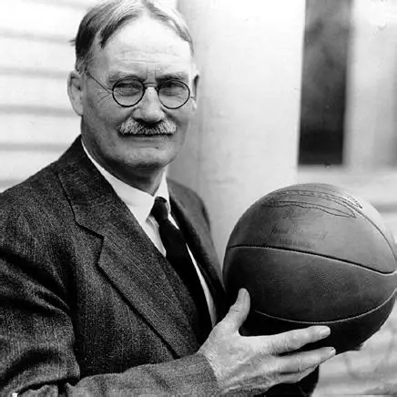

Origins of Basketball
Basketball was invented in 1891 by Dr. James Naismith, a physical education instructor in Springfield, Massachusetts.
The goal was to create a new indoor game that could be played during the winter months while keeping athletes active.
The First Game
The original game used a soccer ball and two peach baskets as goals. Players were not allowed to dribble , and the ball had to be paseed.
Original Equipment Used
- Soccer Ball
- Peach Baskets
- Gymnasium Court
Early Development
As basketball spread across schools and YMCA centers, rules evolved to make the game faster and more exciting.
Key Early Milestones
- 1891 - Game Invented
- 1893 - Metal Hoops Introduced
- 1906 - Open Nets Replaced Baskets
Learn more about the inventor at The Naismith Basketball Foundation